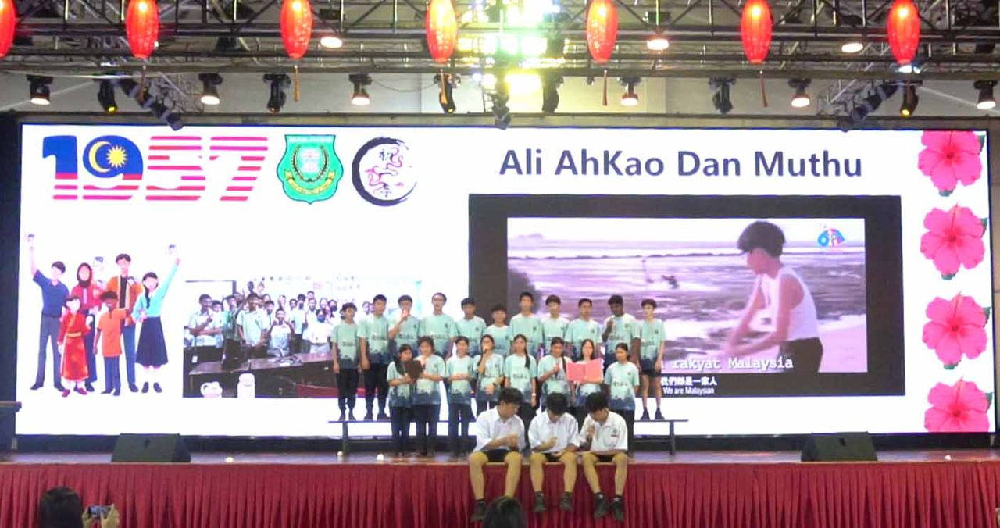
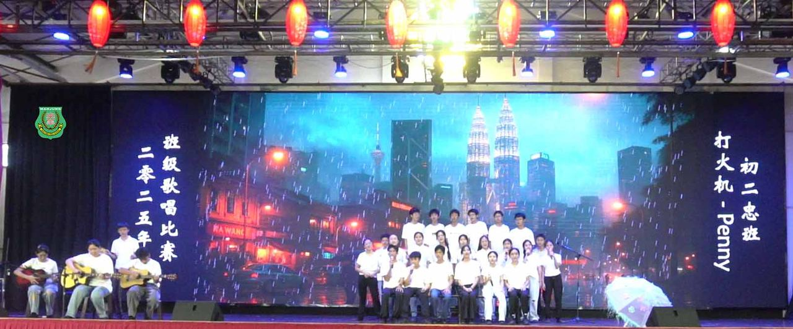
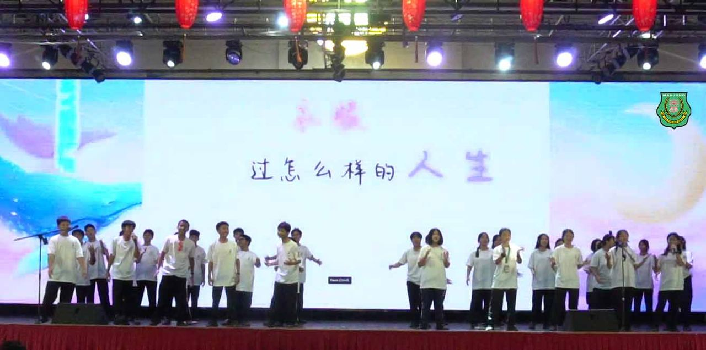
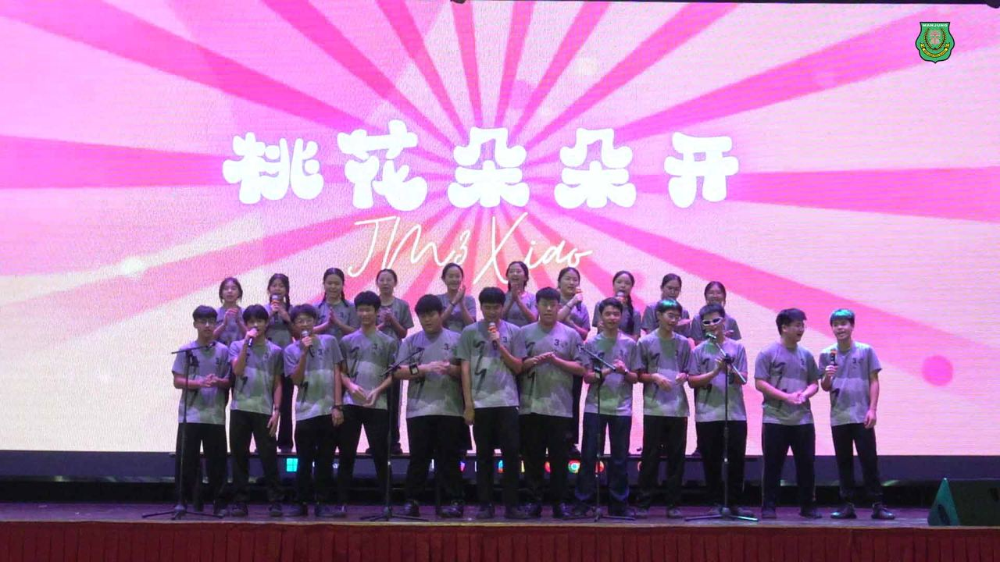
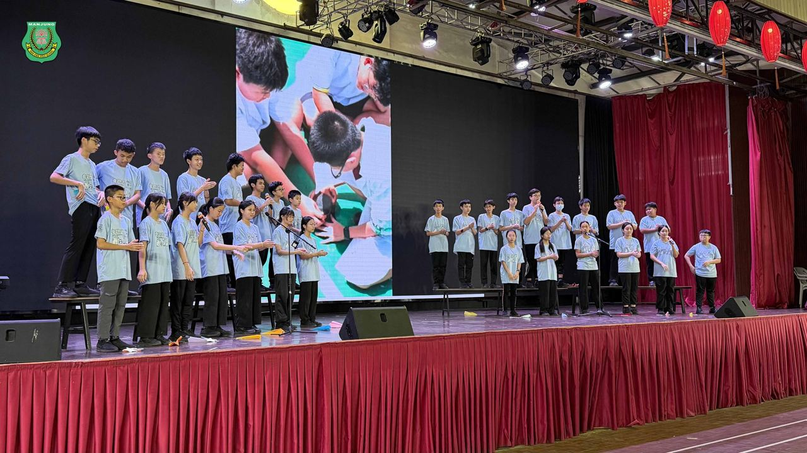
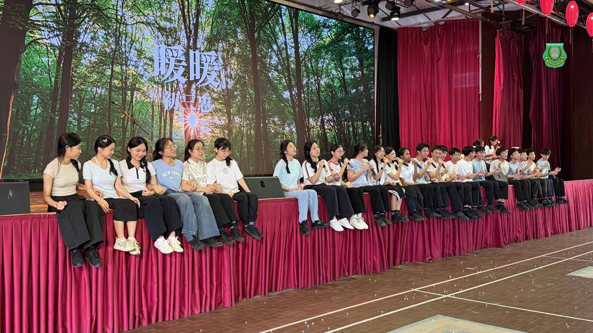
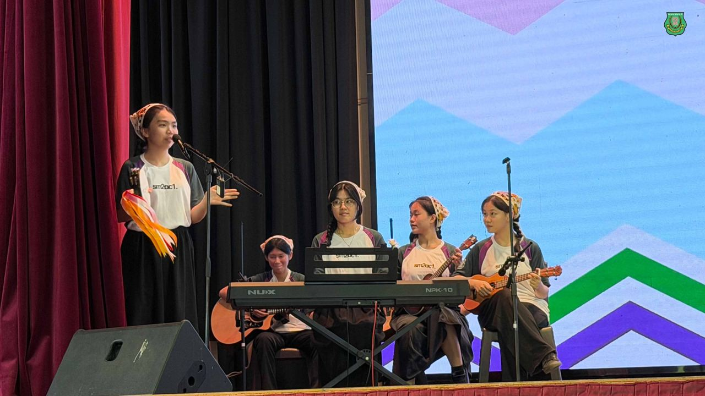
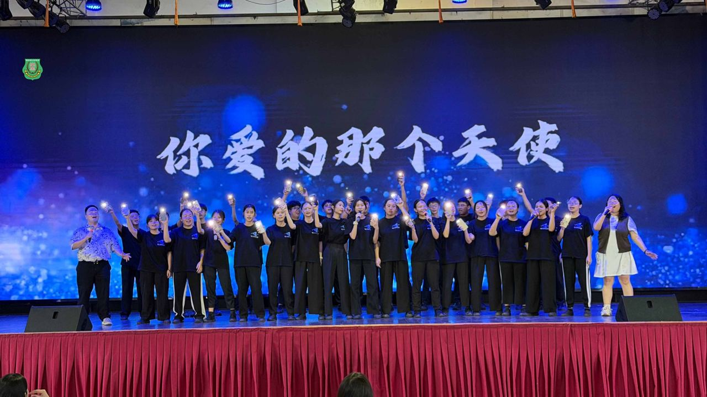

南华独中第12届班级歌唱比赛
南华独中第12届班级歌唱比赛
当熟悉的《浪花一朵朵》与《童话》旋律在礼堂响起，这不仅是音符的流转，更是南华学子对马来西亚原创音乐的致敬。
本校日前举办 “第12届 班级歌唱比赛”，本届赛事别出心裁，以 “支持马来西亚创作” 为主题。从阿牛的庶民摇滚、光良的深情叙事，到关注作词作曲的本地创作者都在比赛选曲范围内，各个班级通过演绎本土作品，唱出了独属于这片赤道土地的文化自信。
比赛现场，比拼的从来不仅是歌艺或舞技，而是全班同学为了同一首歌、同一个舞台所凝聚出的向心力。 校长 陈丽冰博士 在观赛后发表了深情的总结。陈校长坦言，最令人感动的瞬间，并非听到完美的高音，而是看到平日里或许调皮的孩子，在这一刻都全情投入，为了班级的荣誉而大声歌唱。
陈校长以此勉励在座师生：“班级歌唱比赛的意义，在于‘一个都不能少’”不落下任何一个孩子”让每一个孩子都能站上舞台的理念。
本届选曲风格多变，展现了马来西亚音乐的丰富光谱。 初中组 方面，初一孝班凭着一曲大颖的《Proud of Myself》展现了新生代的自信与张力，稳健的台风让他们一举夺下冠军；初二孝班演绎黄明志的《Ali Ahkao dan Muthu》，以三大语言展现种族和谐的温馨画面，荣获亚军；初一忠班则以经典的《童话》唤起全场共鸣，获得季军。
高中组 的竞争更是白热化。高二文商1班以极具用心的编排与提前录影后制的背景等等，都展现了强大的班级凝聚力，成功问鼎冠军宝座。高二理班带来的《桃花朵朵开组曲》创意十足，气氛热烈，拿下亚军。而高一孝班的《浪花一朵朵》与高二文商班的演出同样精彩，双双获得季军。
当日南华礼堂曾经回荡的不止歌声与音乐伴奏，而是几十颗心同频共振的声音。也许多年以后，同学们早已忘记名次，但绝不会忘记全班曾肩并肩，在舞台上发自肺腑的每一个旋律。







